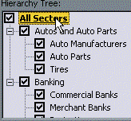
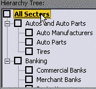
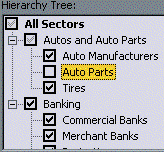

VB5 Hierarchy Tree Selector Control (40K)
VB5 Hierarchy Tree Selector Control (40K)
 VB5 Hierarchy Tree Selector Demonstration (16K)
VB5 Hierarchy Tree Selector Demonstration (16K)
 VB5 Hierarchy Tree Selector Full Source (75K)
VB5 Hierarchy Tree Selector Full Source (75K)
 VB6 Hierarchy Tree Selector Control (39K)
VB6 Hierarchy Tree Selector Control (39K)
 VB6 Hierarchy Tree Selector Demonstration (15K)
VB6 Hierarchy Tree Selector Demonstration (15K)
 VB6 Hierarchy Tree Selector Full Source (74K)
VB6 Hierarchy Tree Selector Full Source (74K)
 Bugs: 0 / 1
Bugs: 0 / 1
 Issues: 0 / 0
Issues: 0 / 0
 Questions: 0 / 0
Questions: 0 / 0
 25 Aug 1999
25 Aug 1999
Version 2 of the control adds the following:
Tile a picture into the TreeView background. This code is based on Ben Baird's TreeView background image sample. Visit his great website, VB Thunder.
Get/set item states using the new Value property.
New Clear method to reset the content.
 Subclassing Without The Crashes
Subclassing Without The Crashes

Hierarchy Selector Control
Easily Build Option Trees Like the IE's Advanced Options and Explorer's Folder Options

The Hierarchy Selector control is an enhanced COMCTL32.OCX TreeView control which allows you to easily create option dialogs like the Win98 Folder Options dialog and the Internet Explorer Advanced option dialog. In addition to this, it also provides methods which allow you display a hierarchy of options to the user and allow them to easily select the items of interest.
This Section May Be Out Of Date
The control also demonstrates how to do a number of other things with the TreeView control which aren't available in the standard version:
- Make a Node Bold
- Apply selection tracking (where a node highlights as the user moves the mouse over)
- Get Full-Row selection in the treeview control
- Make a Node look like it has been cut (dithered icon)
- Change the background and foreground colours of the TreeView
- Expand TreeView Nodes with a single click
- Tile a bitmap into the background of the TreeView.
Hierarchical Options
Often there is a hierachy or drill-down in the data your user must choose from. For example, an application which allows users to choose from geographical regions could show a hierarchy like this:
Continents > Countries > Counties/States > Cities
The idea of the hierarchical selector is to allow the user to select information at any level of drill-down from the top. So for the hierarchy above, if the user wanted to concentrate only on Liverpool in the UK, a large number of unwanted cities can be eliminated at the continent level.
To see this in pictures, the following sequence shows a selector for an imaginary banking application where data is categorised against a hierarchy of sectors:
In the initial state, all items are included.
By clicking off the "All Sectors" item at the head of the list, the control automatically toggles all the children in the hierarchy. Likewise, if you were to click on the Banking sector, it would toggle the states of all the children of the Banking sector.
Sophisticated searches can be easily entered by the user this way. In this case, the user has de-selected a single sub-sector of the Autos sector. The control correctly represents the situation by showing that both the Autos and the All Sectors items have some element of partial selection.
Enjoy!
That's it for the article. The control itself is quite simple in implementation, since it simply extends the standard TreeView control. However, it has proved useful in my projects - I hope it will be useful for you too.